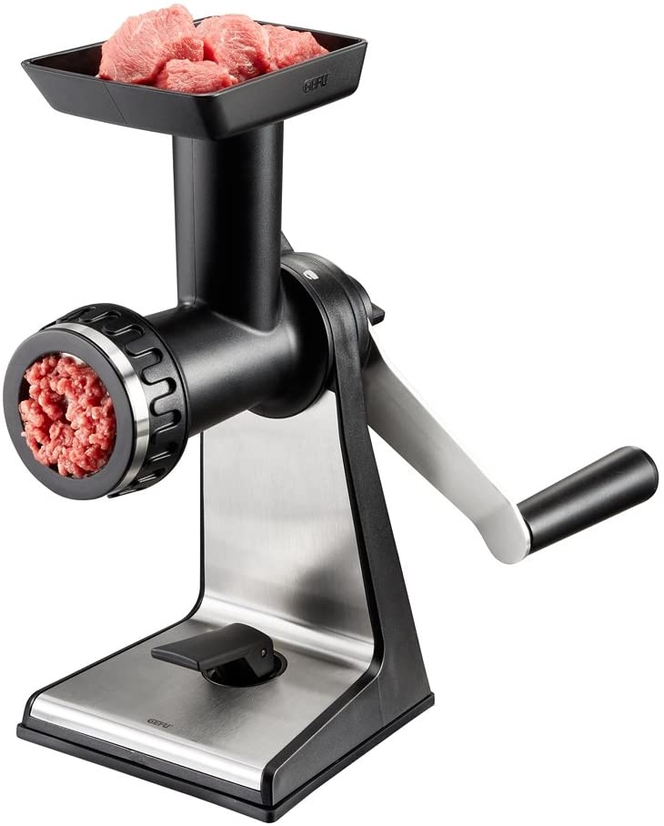
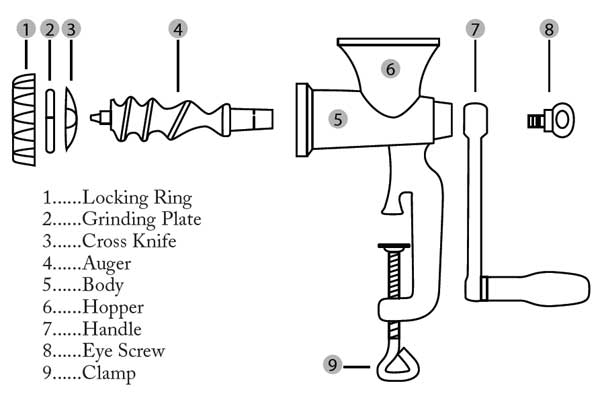

A meatgrinder is not made of currywurst.
There seems to be a controversy about when to add cardinalities and when not.
The answer is, as always: it depends.
The purpose of the diagram is what counts, so apply separation of concerns in the diagrams
you make in analysis and design too.
That does not mean that analysis is about data, and design is about the software system, but that the
aspect you are dealing with in your model will decide what kind of information is needed in a diagram.
The purpose of modeling is communication
A model in any form is a simplification of reality. Model is the art of leaving out details that are not relevant. Not relevant for the purpose of the model. Modeling in this sense also implies that there can be more models of the same reality. Each of these models can then highlight different aspects of interest for what you want to communicate. You want to express these aspects to communicate a meaning, relation, dependency, composition etcetera. A model is always about abstraction because it never IS the real thing but only describe some of it’s aspects.
Models can have different form. Formulas in math, screenplay or scripts for a movie, descriptive text, and diagrams. In UML we have many model types. The trick is to choose the correct model type for the aspects you want to discover. Drawing can be done with a pencil and paper is willing, so you can easily become confused about syntax and semantics of the modeling language, in particular on what to use when.
A natural order of modeling, diagram wise, is something like this:
-
A sketch of the things involved, or a picture, which serves as an initial model. This is what you collect in an interview.
-
The UML equivalent is an Object diagram, in which you can simply draw 6 dogs if that is what fits in a kennel.
-
Or simplify it and draw 1 dog and and add 6 to say that you have six. It makes the model simpler and still have the same information.
-
You want to model relations between objects, like ownership or space to live. In an object diagram that is a line between objects, and as far as dogs and owner goes the 'direction' of the line goes both ways, because 'you know your boss, don’t you George?'.
-
Drawing many owners and dogs becomes tedious, so you need another simplification to leave details out. This gets you to an entity relation diagram or domain model. The diagram does what the name implies: objects and their associations. So one icon to represent dog and owner plus the connecting line suffices. Add multiplicites to express that an owner can have multiple dogs, but no less than one, less he/she not be an owner. As far as the dog is concerned there is only one real pack leader at any time. The graphical syntax you use (lines and boxes) can look a lot like an object diagram. The relevant details are in the relations and multiplicities or cardinalities at the ends.
-
A next abstraction is wanting to reason about types a.k.a. classes in UML. The class diagram actually has the wrong name, it should have been called the type diagram. Its purpose is to find the relations between types, who uses whom or who determines what. It is about dependencies and further abstraction. For instance, both a dog and child should be able to listen, so they have a commonality you want to express, like
Obeyorwhich is not a word but expresses what you want the sub-types to do. It does not change dog nor child but extracts the detail you want to reason about.
Modeling serves to highlight the important aspects. Choose the proper kind of diagram and try to closely stick to the syntax and semantics of the diagram and its purpose, so it helps the understanding of the details you DO want to communicate.
Modeling is always about leaving out details. Making things simpler.
Do not add details to a diagram that make no sense.
To paraphrase someone famous Everything should be made as simple as possible, but no simpler.
The above implies that the situation is not black or white, but some shade of gray.
That grayness is the reason of the confusion, because there is not one answer that fits in all situations.
It also means that you do not have to draw all diagrams all of the time, but only the diagrams that are needed. The question of
course is: How do you know that it is needed? The answer is: as soon as you want to discover or explain something.
Discovering is explaining to yourself. In a course where you need to learn the syntax and semantics of a language you must
of course practice it and use the "words" (icons, lines) to form proper sentences (models, diagrams).
A model is a kind of plan and help to keep oversight, both overall and in the details, where required.
Let me explain:
First you should consider the purpose of the diagram.
-
If you want to play out a scenario, you need objects (instances), and a box and line or stick model actors suffices. Boxes often will do because they are easily drawn (simplification).
-
Object diagram could be the next step.
Then
-
If it is about data analysis, a.k.a. domain modeling, relations between entities, then multiplicities DO matter.
-
A domain model show the relations between data elements. These relations often go two ways, and is natural, hence there is no prevalent direction.
-
If it is about designing your system architecture, then the directions of the associations (is-A, uses, or has-A) take precedence.
-
A proper class diagram of a software system is a directed graph. The relations need to have a direction, so you can discover what should or can go where, or can’t. The directions are especially important because in dependencies (which is what these arrows show), you are not allowed to have cycles.

-
In a software system class diagram, that serves to find potential reuse (using an already existing idea or type etc), cardinalities have no meaning.
-
Its suffices to know the types (class, interface) and their relation, and you rarely need to specify how many instances you will have.
-
If you do need to specify a number, then typically enum is the solution, which implicitly also serves as Singleton.
-
Let us use metaphores. Sausage and Sausage Machines.
-
A domain model is about the data. It is about sausage.
-
In the domain you specify what proportions of meat, fat, spicing, and skin you use. This is called the recipe. The processing takes place in machines.
-
-
A system design is about the sausage machines.
-
What type of bolts and nuts do we need. What is the type of steel for the grinder, and what is it’s shape etc. You need only one design ( ==template, class ) of each.
-
The size (diameter) and consistency of the sausage matter, but for the rest it is metal, wood, plastic, rubber etc.
-
The temperature and preparation time of course also matter, but that is how you use the machine.
-
-
The assembly process of the machine is the last part as far as producing machines goes.
-
In the assembly you need to know the number of bolts, grinder wheels etc. Meat nor sausage is involved, unless you hit yourselves with a spanner. The sausages will be involved in the test lab. (Think test scenarios).
-
You will find places where count matters, like a GUI that shows items of a varying number.
But than also, that count comes from the data. (Show the customers in a GUI list). -
In all other cases the GUI widgets will have names. These names can be applied to the system components. Those are specialized by for instance inheritance or composition but also by configuration, like the colour of the handle of the meat grinder or the text on a label. Or even applying plugins like in a meat grinder by replacing the grind wheel and extruder to get a different sausage type.
-
Transformation of the domain model into the system class diagram sounds reasonable,
but is in fact a fallacy.
It would be as if you could turn sausage into a sausage machine. I’m pretty sure your Butcher will tell you different when you would propose such a solution.

Quiz: What UML diagram type describes the images above best?
The sausages come close to an object diagram. Not much details is shown, which is proper for sausages. You do not want to known. The model is there to express yummy none-the-less.
The meat grinder picture is actually also an object diagram, it is the model to be used for assembly. It does have type names though, and luckily for my case only uses one of each. Ikea build plans are different.
Lucy, where is that Alan-wrench?
Sometimes it helps to go from the meta level to metaphors, to explain things, because \(\text{meta} = \text{abstract}^2\).
Do so if you have to explain something, but once the abstraction has been understood by the reader, you can stop simplifying.
It is easier to model sausages than dogs, because the former sit still.
That concludes this intermezzo on currywurst.